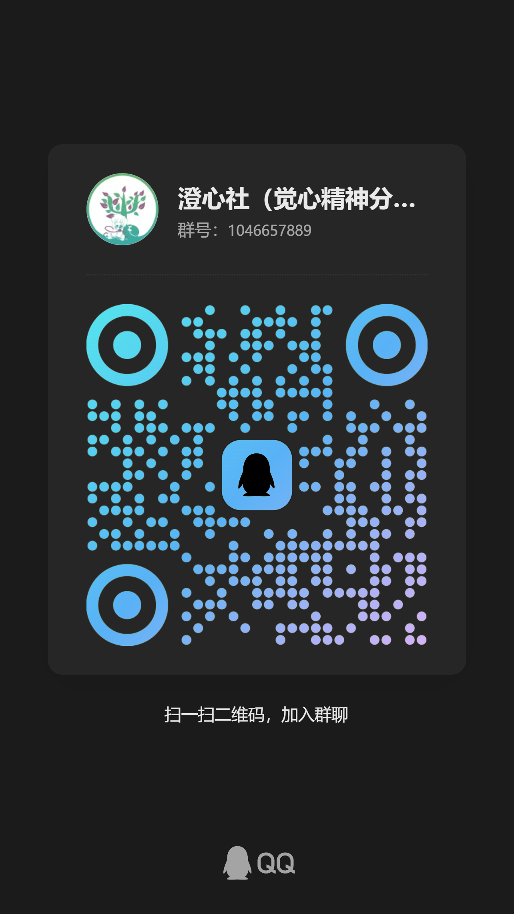

慢读
在概念抵达结论之前，先允许它停留。从基础理论入门，建立清晰而耐心的概念框架。
JUEXIN PSYCHOANALYTIC SOCIETY
温州医科大学 · 精神医学院
人总有一些话，在开口之前就已沉默。
精神分析始于一个朴素的动作——把说不出的，慢慢说成话。
而觉心想做的，是让这件事不必独自完成。
觉心是一个面向精神分析基础理论与跨学科对话的学生学术社团。
从一个概念、一段文本，或一个尚未成形的问题出发——我们不急着得到答案，而是先练习把问题问得更准确。阅读、讨论、再阅读，让好奇长成一种长期的共学。
协会已正式成立，面向温州医科大学及温州医科大学仁济学院全体学生开放。
在概念抵达结论之前，先允许它停留。从基础理论入门，建立清晰而耐心的概念框架。
把个人的理解带进共同的讨论。读书会与研讨班，让每一次独自的阅读都有回应。
在精神医学、心理学与人文社科之间往返，让不同的视角彼此照亮。
围读、对谈与下行的阶梯——都是觉心开始生长的证据。
拖动或横向滑动 ↔


A MOMENT OF REFLECTION
选一个此刻让你停下来的问题。
留意你在相遇中的期待、失落与回应。重复不是巧合，它常常是最诚实的线索。
保留好奇，也容许暂时没有答案。首学期以精神分析基础理论入门为主线。
稳定的节奏，比一次性的热闹更重要。
围绕一个主题集中讨论。带着阅读中的疑问而来，在不同的观点之间把问题看得更清楚，再带着更准确的问题离开。
主题梳理 / 讨论主持 / 观点交锋
共读基础著作，梳理概念，交换笔记。独自阅读时卡住的那一页，值得被一群人重新翻开。
共同阅读 / 概念梳理 / 学习记录
由指导教师领读专题，在分享中拓展视野，让基础理论与更广阔的学科问题相接。
教师指导 / 专题分享 / 跨学科对话
以上为首学期活动规划，具体时间与地点请关注社群通知。
ECHOES OF PRACTICE
从讨论走向实践：训练主题梳理、讨论主持与反思沉淀。
主持讨论
实践训练
参与前期筹备
「从单纯的学习者，慢慢成为讨论的组织者与引导者。」筹备成员的真实反馈 · 社团成立宣讲
教师指导与学生共建，
为持续的学习提供支撑。
指导教师
温州医科大学精神医学院讲师
精神分析学博士，哈佛大学医学院博士后。研究跨越睡眠、焦虑抑郁与精神医学的技术转化。
发起人
精神医学院 2024 级本科生
长期阅读精神分析经典，参与论文与项目研究，负责把兴趣变成可以长期同行的社团。
THERE IS A CHAIR FOR YOU
面向温州医科大学及
温州医科大学仁济学院全体学生开放。
扫描二维码加入 QQ 群，了解活动与共学安排，
也可以在 QQ 中直接搜索群号。
